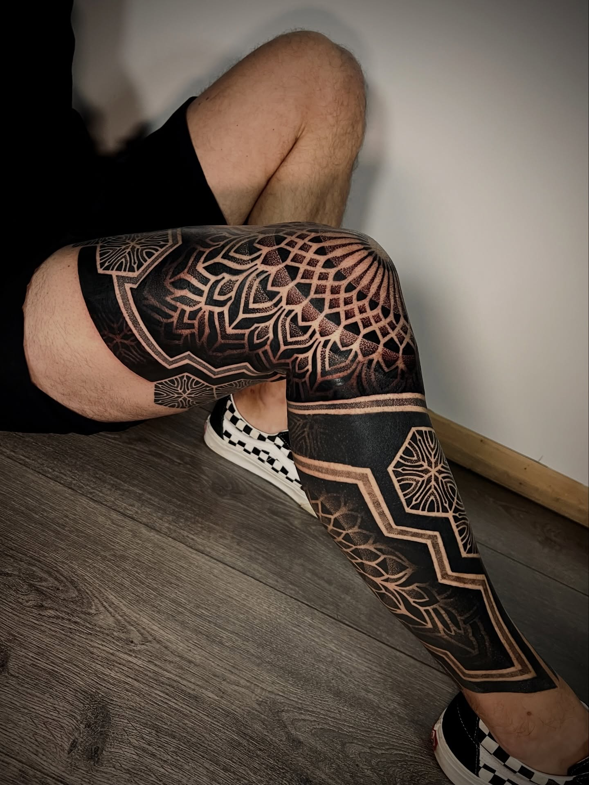
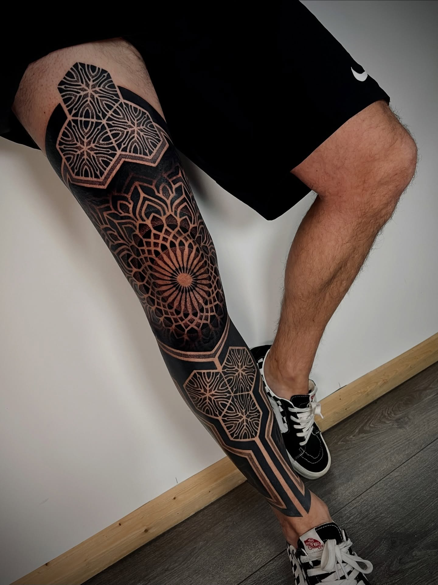
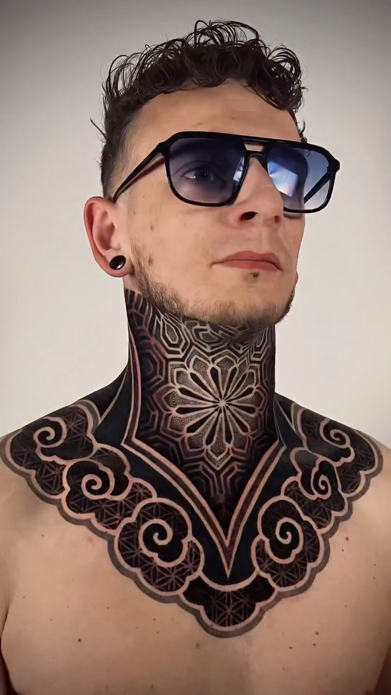

A long conversation with Clément Berdah
On origin, the French scene, the Flower of Life, composition, and the tension that holds a piece together.
"Geometry isn't a style for me. It's a way of looking — at the body, at light, at the line itself."
Clément Berdah works from a small studio outside Paris. Over eleven years, he has built a vocabulary that returns again and again to the same shapes — the Flower of Life, the hexagonal grid, the ornamental band — and finds new things in them every time. We met him on a quiet morning, an hour before his first client, to talk about geometry as a way of looking.
Q.01How did you start?
I drew first. I drew before I tattooed. The line was the line on paper for a long time before it was the line on skin, and that order matters — the discipline came before the medium, not after.
Q.02The French scene — what's it like?
Small, generous, suspicious of trends. A few studios in Paris and Lyon are doing serious work. We talk to each other. We share references. There's a French politeness in how the artists treat each other's lines that I haven't seen elsewhere.
Q.03How do you describe your style?
I don't try. Geometric is the word that lets me work. But geometry isn't a style for me. It's a way of looking — at the body, at light, at the line itself.

It's a generative shape, not a decorative one. Every time I draw it, the next ring tells me where the piece wants to go.
Q.04You return to the Flower of Life often.
Because it isn't finished. Every time I draw it, the next ring tells me where the piece wants to go. It's a generative shape, not a decorative one.
Q.05How do you compose on the body?
Freehand, always. I draw on the body for an hour before the needle starts. The body proposes the composition; I respond to it. A piece designed flat on a tablet and then transferred — you can feel it. It sits on the body like a sticker.
Q.06What do you avoid?
Symmetry as a default. Repetition as a default. The most common mistake in geometric tattoo is treating the form as decoration rather than as a structure.
From the archive



Q.07The line itself — what's the thing you care about most?
That it holds. A line on skin will move with the body for forty years. If it's right, it gets better with that movement. If it's wrong, it falls apart. I think about that on every stroke.
Q.08What do clients ask for?
Often a shape they've seen. I try to listen for what's behind the request. The shape is rarely what they actually want; what they want is a feeling the shape gave them. We work from there.


An imbalance that wants to balance.
A pull between two centres. If both centres are equally weighted, the piece is dead. The eye needs somewhere to fall first, and somewhere to fall back to.
Berdah pauses, holds his hands a foot apart over the table, then closes the gap halfway. The point, he says, is the gap that doesn't quite close.
Q.09How long does a piece take?
Three to eight hours of needle, but a week of looking. The looking is the longer part of the work.
Q.10The tension that holds a piece together — how do you describe it?
An imbalance that wants to balance. A pull between two centres. If both centres are equally weighted, the piece is dead. The eye needs somewhere to fall first, and somewhere to fall back to.
Q.11Who are you watching?
Younger artists. The ones who haven't named their style yet. They make the strangest things, and the strangest things age best.
Q.12What's next?
A long break, in autumn. Then more of the same — the same shapes, more carefully looked at. That's the whole project, really.
Recorded Spring 2026 · Paris

{kind=link}
{kind=link}
{kind=link}